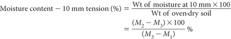

The subjectivity of visual estimation of a saturated soil paste can be overcome by wetting-up the sample on a capillary saturation table (Longenecker and Lyerly 1964). The procedure given is a modification of that technique (Beatty and Loveday 1974).
The moisture content at 10 mm tension is obtained by calculation, following equilibration of air-dry soil (<2 mm) on a blotting-paper suction plate set at 10 mm water tension.
Blotting paper tension table
A base, constructed from flat, clear acrylic plastic, as described by Beatty and Loveday (1974), is shown in Figure 2.2. The surface slots are cut approximately 60 mm apart; leg height is not critical – up to 300 mm can be used.
Cut strips of blotting paper to fit between the slots in the acrylic plate. Fold these strips so as to pass up from the base, across the top of the acrylic plate, down through the next slot to the base, up through the next slot, etc. Place blotting paper the same size as the flat plate on top of the blotting paper strips and put the apparatus in a container fitted with a lid and an external constant water level device. A separate internal water level indicator is desirable to allow accurate calibration of water height. This should be 10 mm below the top of the acrylic plate (base of soil sample). Wet the strips of blotting paper sheet to equilibrium by capillarity from water added to the container, or by watering the strips and sheet and allowing them to drain to the free water surface.
Place a numbered set of rings, e.g. 45 mm ID × 10 mm ht. brass, on individual filter papers (Whatman No. 1; dia larger than the rings) on the blotting-paper tension table. Adjust water level (deionised water) to 10 mm below the top surface of the tension table.
Using a standard scoop (16 cm3 for the ring described) place a sub-sample of each air-dry, ground (<2 mm) soil into the rings so that the levelled-off height does not exceed 10 mm. A level surface of soil and good soil-to-paper contact are necessary for reproducible results.
Figure 2.2. Acrylic base for blotting paper; portion of tension table for saturation extracts.
Replace the lid of the container to minimise evaporation and allow soils to wet by capillarity for 48 hours (h). During this period the water level must be accurately maintained; check after about 24 h; add deionised water as necessary if an automatic water level device is not available.
Remove individual samples of soil by sliding a broad spatula of thin cross-section between the blotting and filter paper. Remove the ring and invert the filter paper over a previously weighed dish and lid (M1). Do not wipe the filter paper on the side of the dish as this will give a high apparent water content. Weigh the wet soils plus dishes with lids to ±0.001 g (M2). Remove lids and dry soils at 105°C to constant weight. Remove from oven, cool in a desiccator, then quickly replace lids on correct containers. Weigh dry soil plus dish and lids (M3).

Report result as moisture content – 10 mm tension (%).